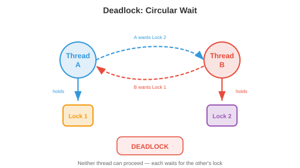

Part 1 built the machine. This part is about what happens when more than one thing wants it — which is the problem a production manager has had since the first workshop with two jobs and one lathe. The operating system is the coordinator, and almost every decision it makes has a name you already use.
Part 1’s §18 left three explicit debts, and this part pays all three. §05 of part 1 defined a partial order and observed that incomparable tasks are concurrent — §12 here turns that into a race condition and shows the lost update happening. §16 of part 1 gave every process an isolated address space without saying who enforces it — §08 here names the mechanism. And §13 of part 1 showed that a pipeline is governed entirely by its bottleneck — §16 here is that statement in its general form.
The headline is §16. Amdahl’s law is not merely analogous to the theory of constraints; it is the same statement, and it is also exactly part 1’s line-balancing law applied to a two-station line where the first station cannot be subdivided. Speedup is \(1/((1-p) + p/n)\); the un-splittable station is \(1-p\); and once the parallel station drops below it, every further operator you add buys nothing. Goldratt’s "an hour saved at a non-bottleneck is a mirage" is that sentence in English.
The second thing worth arriving for is §04. Shortest-job-first in an operating systems textbook is the SPT dispatching rule in a production scheduling textbook, its optimality is the same theorem, and it fails for the same reason in both fields.
Part 1 covered discrete maths and computer architecture and is published separately. This part covers source files 03 and 04 — operating systems and concurrency. Part 3 takes programming languages and compilation, and carries the chapter’s worked example, its 24-question bank and its concept map. Each part has its own provenance appendix.
This is the most industrial-engineering-shaped part of the series so far. Almost every row is a production concept with a computing name, and the amber rows are the few places where the shop-floor instinct actively misleads.
| What you already know | What this part calls it | Verdict |
|---|---|---|
| Theory of constraints; the bottleneck sets the rate | Amdahl’s law | Identity. A two-station line whose first station cannot be split. See §16. |
| SPT dispatching minimises mean flow time | Shortest Job First scheduling | The same theorem, verified exhaustively. See §04. |
| Economic order quantity; setup against holding cost | The scheduler’s time quantum | Same functional form, \(q^\ast=\sqrt{A/B}\). See §05. |
| Kanban card count; CONWIP | A counting semaphore | The same device. Cap the holders, cap the queue. See §13. |
| Little’s law \(L = \lambda W\) | Queue length in the run queue | The same law, assuming nothing. Not in the source. See §06. |
| Blocking and starving on a line | Producer–consumer on a bounded buffer | The same two words, for the same two conditions. See §13. |
| Changeover / setup time; SMED | Context switch | The same cost, and the same reason to minimise it. See §02. |
| Standard work: draw tooling in the documented order | Lock ordering to prevent deadlock | Identical fix, identical justification. See §14. |
| Two operators updating one stock card | A race condition on a shared counter | The same failure. One update silently vanishes. See §12. |
| One operator tending several machines | An event loop with async/await | The machine-interference problem, renamed. See §11. |
| A travelling route card filled in before the operation | A journaling file system | The same protocol, for the same crash. See §07. |
| Weekly lorry against a daily milk-run | Bandwidth against latency | The same trade. A van of disks beats 10 Gbit/s above 18 TB. See §09. |
| Dedicated plant against a partitioned shared one | Virtual machines against containers | The same choice, isolation against overhead. See §10. |
| Machine-hour quotas per job | cgroups | The same instrument. See §10. |
| “More capacity at the busy station always helps” | Adding cores to a program with a lock | False past a point. A 1% critical section caps you at 100×. See §16. |
| “Capping WIP is nearly free” | A semaphore sized too small | Only above the working queue length. Measured cost below it. See §13. |
| Interleaving two jobs on one machine is parallel work | Concurrency | It is not parallelism, and the distinction is load-bearing. See §11. |
| “Run the shortest job first” as practical advice | SJF in a real scheduler | Unimplementable. Nobody knows the burst times. See §04. |
Fourteen of eighteen rows say identity or the same. Spend your time on §16 (the one law that governs everything else here), §04 (the theorem you already know, and why the OS cannot use it) and §11 (the distinction that the amber row calls load-bearing). The rest you can read at speed, because you have been making these decisions on a shop floor for years.
The source opens with a kitchen: the ingredients are there, but nothing coordinates who uses the stove. Substitute a machine shop and the three responsibilities it lists become a job description you could advertise.
Abstraction — hide the hardware behind clean interfaces. A programmer writes to "a file" without knowing whether it lands on an SSD or a network share, the way a planner issues "a turning operation" without specifying which of four lathes. Resource management — decide who gets the CPU, the memory, the disk, and for how long. That is loading and dispatching. Isolation and protection — one job must not damage another. That is a guarded cell and a permit-to-work.
The one that has no shop-floor equivalent is the strength of the isolation. A badly written program genuinely cannot corrupt another program’s memory, because the hardware refuses, and §08 explains how. No machine shop achieves anything like that guarantee.
A process is a running program: its code, its data, its stack, and its state. The OS tracks all of that in a Process Control Block — process ID, registers, program counter, memory map, open files, priority. It is a job card.
To switch from one process to another the OS saves the current state into its PCB and loads the next one’s. That is a context switch, and the source is blunt about the cost: saving and restoring registers, flushing caches, invalidating TLB entries — microseconds each time.
Same structure, same economics. You stop, you put away the current setup, you fetch and install the next one, you resume. The work of switching produces nothing. Part 1 §14 made the same point about a mispredicted branch emptying a pipeline; this is the coarser, slower version, and the response is the same one SMED gives you: either make the switch cheaper or switch less often. §05 is the arithmetic of "less often", and threads (§03) are the "cheaper" branch.
Process creation in Unix is a two-step that looks strange until you see the point.
fork() duplicates the current process; exec() replaces its code
with a new program. Splitting them means the child can adjust things between the two
— redirect its output, change environment, drop privileges. That is the difference
between "set up a new job" and "start the job", kept as separate operations so you can
intervene in between, which is exactly why a setup sheet and a work order are separate
documents.

The state diagram is worth reading carefully, because the two waiting states are not the same thing. Ready means the job could run right now and is queued for a core — that is a job waiting at a machine. Blocked means it cannot run even if a core were free, because it is waiting for something else: I/O, a lock, a timer — that is a job waiting for material. Giving a blocked process a core achieves nothing, which is why the scheduler only ever picks from the ready queue.
A thread is a strand of execution inside a process. Threads in one process share code, data and heap; each has its own stack and registers.
The trade is one you have made when laying out a cell. Separate processes are separate workcells with their own tool sets: safe, isolated, and expensive to coordinate — anything they share has to be formally handed across. Threads are one cell whose operators share a common tool board: coordination is instant, because everyone can see the same board, and that is exactly what makes it dangerous. Two operators reaching for the same tool at the same moment is §12.
Kernel threads are scheduled by the OS. User threads (green threads, goroutines) are scheduled by a library inside the process, so creating and switching them costs no system call — much cheaper, but the OS cannot see them, so if one of them blocks, the whole process blocks. Modern runtimes use a hybrid: many user threads mapped onto fewer kernel threads.
A thread pool pre-creates workers that wait for tasks. That is a manned cell standing ready rather than hiring for each job, and the justification is identical: the setup cost of creating a worker is paid once instead of per task.
The scheduler decides which ready process runs next. The source lists the classic algorithms. Every one of them is a dispatching rule you have been taught under a different name.
| Operating systems | Production scheduling | Same failure mode |
|---|---|---|
| First Come First Served | FCFS dispatching | The convoy effect: one long job blocks everything behind it |
| Shortest Job First | SPT (shortest processing time) | Needs the durations in advance; long jobs can starve |
| Shortest Remaining Time First | Pre-emptive SPT | As above, plus churn from constant pre-emption |
| Priority scheduling | Priority dispatching | Starvation of the low-priority queue |
| Aging | Slack-based / critical-ratio rules | Priority creeps upward with waiting time |
| Round Robin | Time-sliced loading | The quantum trade-off — §05 |
| Multilevel feedback queues | Adaptive dispatching by observed behaviour | Demotes jobs that use their whole slice |
The source says SJF "provably minimises average waiting time". In production scheduling
that theorem is: the SPT rule minimises mean flow time on a single machine. Same
statement. Verified under [Ch13 s04] — on the source’s own
example, FCFS gives a mean flow time of 19.20, SPT gives 14.00, and exhaustive search
over all 120 permutations finds 14.00. Over 300 random six-job instances, SPT was never
beaten once.
The convoy effect is the same result read backwards: on that instance FCFS is 37.1% worse than SPT purely because one ten-unit job sits at the front. You have seen that queue.
SPT needs the processing times before you start. On a shop floor you usually have them: routings carry standard times, and an estimate within 10% is normal. An operating system has nothing of the kind. It cannot know whether a process will run for two microseconds or two hours, and there is no routing to consult — part 1 §08 explains why no analysis can supply it either, since deciding whether a program halts at all is undecidable.
So the provably optimal rule is unimplementable, and what real schedulers do instead is infer behaviour from history: multilevel feedback queues demote a process that uses its whole quantum (it is probably CPU-bound) and keep one that blocks early (probably interactive). That is dispatching by observed behaviour rather than by standard time, and it is the right response to not having the data. The optimality guarantee is gone, and the source does not say so.
Five jobs with burst times 10, 4, 6, 2, 8 arrive together. How much does running them shortest-first improve the mean flow time against arrival order?
time
optimum
switches
wait
Round robin gives each process a fixed time quantum, then pre-empts it. The source states the trade in one line: "too small means excessive context switching, too large degrades to FCFS". That is a cost with two opposing terms, and you have optimised exactly this shape before.
Switching overhead falls as the quantum grows, because the fixed switch cost is amortised over more useful work — a term in \(A/q\). Waiting time rises as the quantum grows, because everyone else’s turn takes longer — a term in \(Bq\). Total cost:
Set it beside the economic order quantity, which balances setup cost against holding cost:
The same functional form, and therefore the same optimum structure. Verified numerically
at three parameter pairs under [Ch13 s05]: the numerical argmin matches
\(\sqrt{A/B}\) every time.
Including the most useful one: the bottom is flat. Being a factor of two away from the optimal quantum costs only 25% extra (\(\tfrac{1}{2}+2 = 2.5\) against a minimum of \(2\)), exactly as being a factor of two off the economic order quantity does. So do not agonise over the number; get within a factor of two and stop. A Linux quantum of a few milliseconds against a context switch of a few microseconds is comfortably in that band.
The vocabulary maps straight across: the quantum is a batch size, the context switch is a setup, thrashing on tiny quanta is a line that spends its shift changing over, and a quantum so long it degrades to FCFS is a monthly batch run.
Little’s law, which the source never mentions
beyond the chapterThe source discusses run queues, waiting times and throughput for three pages without once writing down the relation that connects them. You already have it:
Jobs in the system equals arrival rate times time in the system. Simulated on an M/M/1
queue at 70% utilisation ([Ch13 s06]): \(L = 2.3240\),
\(\lambda = 0.7002\), \(W = 3.3191\), and \(\lambda W = 2.3240\) — agreement to
better than 0.01%, against the theoretical \(\rho/(1-\rho) = 2.3333\).
What makes it worth stating is how little it assumes. No distribution, no scheduling discipline, no independence. It holds for the run queue, for the shop floor, for a hospital, for money in a bank. Which means the WIP intuition you already have applies to a computer without adjustment: if jobs arrive at 100 per second and each spends 50 ms in the system, there are five in there on average, and no clever scheduler changes that arithmetic.
The consequence that catches people in both fields is that \(W\) explodes as utilisation approaches 1. At \(\rho = 0.7\) the queue holds 2.33 jobs; at \(\rho = 0.9\) it holds 9; at \(\rho = 0.95\), 19. You know this as the reason a plant loaded to 95% has terrible lead times while one at 70% flows — and it is exactly why a server at 95% CPU has terrible latency. Running a resource near capacity buys throughput with queue time, at an accelerating exchange rate. Same curve, same trap, two industries.
A server runs at 70% utilisation with an average of 2.3 jobs in the system. You raise utilisation to 90%. What happens to the average number in the system?
the system
the system
Little’s law
+1 point
Part 1 §16 covered paging and page replacement. Three additions here.
Demand paging loads a page only when first touched, so a 1 GB program that uses 50 MB never loads the rest. That is issuing material against actual consumption rather than against the bill of materials — pull, not push.
Fragmentation is why pages are fixed-size. Variable-size allocations leave unusable gaps between them (external fragmentation), which is the offcut problem in bar stock and sheet nesting. Fixed-size pages eliminate it completely, at the cost of wasting part of the last page — standard stock lengths, with the same trade.
File systems store metadata in an inode (size, ownership, permissions, block pointers) and the name separately in a directory. The separation is what allows one file to have several names. A part number and its storage location are two different records for the same reason.
Before modifying its structures, a journaling file system writes what it is about to do into a log. If the power fails mid-operation, the log is replayed on reboot and the operation is completed or undone. Without it, a crash can leave a file’s data blocks written but its inode not — a part machined with no record that it was. That is why a traveller card is signed at the start of an operation and not the end, and why an interrupted job can be picked up by the next shift. Same protocol, same failure it defends against.
Part 1 §16 said every process gets an isolated address space and did not say who enforces it. Here is the answer, and it is hardware.
The CPU runs in one of two modes. In user mode a program may execute its own code and touch its own memory, and nothing else — attempts to reach hardware or another process’s memory are refused by the processor itself. In kernel mode there are no restrictions. A system call is the single controlled doorway between them: the program puts its arguments in registers and triggers a trap, the CPU switches mode and jumps to a fixed handler, the kernel validates the arguments and does the work, then switches back.
The mechanism is the interrupt of part 1 §17 — save state, jump to a handler from a table, restore, resume — but triggered deliberately by the program rather than by a device. In shop terms: a permit-to-work. You cannot enter the restricted area yourself; you present a request at a single controlled point, someone authorised does the work under supervision, and you are handed the result. The strength of the guarantee comes from there being exactly one doorway and the hardware refusing every other route.
A system call is not a function call. It crosses a protection boundary, which means mode switch, argument validation and cache effects — hundreds of cycles at best. That is why high-performance code batches its I/O rather than making a call per byte, and the reasoning is the changeover arithmetic of §05 again: a fixed cost per crossing means you want fewer, larger crossings. Every optimisation guide that says "reduce syscalls" is saying "increase the batch size".
The network stack is layered: link, network (IP), transport (TCP/UDP), application. Each layer offers a clean interface to the one above and adds its own header. That is a routing sheet with operation-level detail hidden from the planner above it.

TCP guarantees that everything arrives, in order, by numbering packets, acknowledging them, retransmitting what is lost, and throttling to avoid congestion. It pays a round trip up front for the handshake. UDP does none of this and is correspondingly faster. That is despatch with proof of delivery against a straight push, and the choice turns on the same question: what does a lost item cost?
Bandwidth is bytes per second — parts per hour. Latency is the time
for one item to arrive — lead time. They are independent, and a channel can be
superb at one and dreadful at the other. The extreme case is worth computing: a van of
hard drives has bandwidth measured in terabytes per hour and latency measured in hours.
Against a 10 Gbit/s link and a four-hour drive, the crossover is at
18 TB ([Ch13 s10]) — below that, send it over the wire;
above it, drive. That is the weekly lorry against the daily milk-run, and it is the
same calculation.
For anything distributed, the distinction decides the architecture. Latency governs synchronisation, because everyone waits for the slowest — that is a synchronised line where the station times must match. Bandwidth governs bulk transfer. A design that is latency-bound and a design that is bandwidth-bound want opposite things, exactly as a line balanced for takt and a line run for utilisation do.
You must move data to a site four hours’ drive away. You have a 10 Gbit/s link. Above roughly what volume does physically driving the disks become faster?
link
(4 h drive)
wins
volume
A virtual machine simulates whole hardware, so each one runs a complete operating system of its own. Strong isolation, heavy overhead — a separate plant with its own utilities and its own management.

A container shares the host kernel and isolates by two kernel mechanisms that are worth naming separately, because they do different jobs:
- Namespaces control what a process can see — its own view of the process list, network interfaces, file system mounts, hostname. That is a partitioned bay: you can only see your own area.
- Cgroups control what a process can use — CPU time, memory, disk and network bandwidth. That is a machine-hour quota, and it is what stops one job starving the rest.
So a container is a work cell inside a shared plant: its own bay and its own tooling, but the plant’s compressed air, power and management. It starts in milliseconds because there is no plant to commission, only a bay to mark out.
The reason containers took over is not performance. It is that a container image specifies its whole environment — versions, libraries, dependencies — so it runs identically everywhere. That is a controlled process specification: the reason you document feeds, speeds, tooling and fixture rather than trusting that the next shift will set it up the same way. "It works on my machine" is "it worked on my setup", and the answer in both fields is to make the setup part of the document.
The source draws the distinction with a kitchen: concurrency is one chef alternating between chopping and stirring; parallelism is two chefs. The distinction is load-bearing and the shop-floor version is sharper.
Concurrency is managing several tasks that take turns. One operator tending four semi-automatic machines is concurrent: they load machine 1, walk to machine 2 while 1 runs, and so on. Nothing is simultaneous about the operator. Parallelism is executing several tasks at once, and it needs several execution units — four operators.

Asynchronous programming handles thousands of connections on one thread with an event loop: a task that must wait for I/O registers a callback and yields, the loop runs the next ready task, and the first resumes when its data arrives. That is precisely one operator tending \(n\) machines, and the classical analysis is the same one — you are exploiting the fact that each machine is idle-waiting most of the time, and the scheme collapses the moment the operator becomes the busy resource. Async is ideal for I/O-bound work and useless for CPU-bound work, which is the identical conclusion to "machine interference only pays while the operator has slack".
Cooperative against pre-emptive is the other half. Coroutines yield voluntarily at
an await; OS threads are interrupted whether they like it or not. The
cooperative version is cheaper and has a failure mode you know well: one task that
never yields stops everything. An operator who will not leave machine 1 until it
finishes has starved the other three, and no amount of scheduling policy helps, because
the scheduler was never given control.
Python’s Global Interpreter Lock is the limiting case. Only one thread may execute Python bytecode at a time, so threads give concurrency and never parallelism for CPU-bound work — a single permit that every operation must hold. §16 puts a number on what that costs.
Part 1 §05 said two tasks with no precedence arrow between them are concurrent and may run in either order. Here is what that costs when they touch the same thing.
counter += 1 looks like one operation. It is three: read the value,
add one, write it back. If two threads read 5, both add 1, and both write
6, the counter lands on 6 instead of 7 and one increment has vanished without trace.
Simulated over a random interleaving of four threads doing fifty increments each
([Ch13 s13]): expected 200, actual 62. Sixty-nine percent of the work
disappeared, and nothing crashed, nothing logged an error, and the number that came out
looks perfectly plausible.
Both read the count as 12. Both take a part. Both write 11. The card says 11, the shelf holds 10, and the discrepancy surfaces weeks later at stocktake. Identical failure, identical cause — a read-modify-write that was not atomic — and identical fix: one hand on the card at a time. A mutex is the card being physically held.
The cost of that fix is contention. While one thread holds the lock, every other thread wanting it waits. That is a queue at a single shared tool, and §16 shows it is the thing that caps your whole system.
Four threads each increment a shared counter 50 times with no lock. The expected total is 200. What is a realistic actual result?
lost
the lock
A mutex admits one holder. A counting semaphore generalises it: initialise
it to \(n\), and \(n\) threads may hold it at once. wait() takes one,
signal() returns one, and a thread that finds none available blocks.
Take a card to start work, return it when finished, and if there is no card you wait. The count caps the work in process, which caps the queue. CONWIP is the same device under a third name. The source describes a semaphore as useful "for resource pools like database connections" — that is a tool crib with \(n\) sets of tooling and a sign-out board.
Simulated ([Ch13 s14]) on a queue at 80% offered load: capping the count at
10 cuts mean work-in-process by 26% while giving up only 2.4% of
throughput. That is the lean argument, measured.
The same simulation with the count set to 1 gives up 44% of throughput. A semaphore sized below the queue length the system naturally wants does not tidy the queue, it throttles the line — arrivals are turned away and capacity sits idle. The rule that transfers is the honest version of the lean one: reducing WIP is nearly free until the cap approaches the working queue length, and expensive immediately after. Sizing a connection pool and sizing a kanban loop are the same problem with the same cliff, and both are usually set by measurement rather than theory.
Producer–consumer, blocking and starving
The classic problem: producers put items in a fixed-size buffer, consumers take them out. Producers must wait when it is full; consumers must wait when it is empty. The standard solution uses two counting semaphores — one counting empty slots, one counting full ones — plus a mutex for the buffer itself. Two kanban loops running in opposite directions.
And the two failure conditions have the same names in both fields, which is not a coincidence: a producer that cannot deposit is blocked, a consumer with nothing to take is starved. Those are the two words in every line-design text, describing the same two states of a station either side of a buffer.
Read-write locks allow many readers together but give a writer exclusive access — many people may consult the drawing, only one may revise it, and nobody consults it while it is being revised. The fairness problem is real in both: if readers keep arriving, the writer may never get in.
Deadlock is a set of threads each holding something another needs, in a cycle. Nobody can proceed and nobody will give way. You have seen it as two jobs each holding a fixture the other needs, and as a gridlocked junction.

Four conditions must hold simultaneously, and the word necessary is doing real work — break any one and deadlock is impossible:
- Mutual exclusion — the resource takes one holder at a time.
- Hold and wait — a thread keeps what it has while waiting for more.
- No pre-emption — you cannot take a resource back by force.
- Circular wait — a cycle exists in the waiting graph.
Impose a total order on resources and require every thread to acquire in that
order. A cycle then cannot form, because a cycle would need someone to acquire a
lower-numbered resource while holding a higher-numbered one. Verified under
[Ch13 s15]: five philosophers all reaching left first deadlock; five
philosophers obeying a total order on the forks never do, and the same holds at seven.
"Every thread acquires locks in the same order" is "every operator draws tooling in the documented sequence." Same rule, same reason, and in both fields the discipline is boring and the alternative is a stoppage nobody can diagnose.
The alternatives are worse. Avoidance — the Banker’s algorithm — checks before each grant whether the system stays in a state from which everyone can finish. It needs each thread’s maximum future demand declared up front and costs \(O(n^2m)\) per request, which is why essentially nobody uses it; requiring every job to declare its total tooling needs before starting is equally impractical on a shop floor. Detection lets deadlock happen, finds the cycle, and breaks it by killing something — which is what database systems do, aborting one transaction. In practice: prevent by ordering where you can, detect and recover where you cannot.
Five philosophers each need the fork on their left and the fork on their right. All five reach for their left fork first. What happens?
held
proceed?
wait?
broken
Locks bring contention, priority inversion and the risk of deadlock. Lock-free structures avoid them using a single hardware instruction: compare-and-swap. CAS checks whether a location still holds the value you expect and, if so, replaces it — atomically, in one indivisible step.
The usage pattern is a retry loop: read the current value, compute the new one, attempt the swap; if someone else changed it in the meantime the swap fails and you start again. This is optimistic rather than pessimistic control. You do not take the card out of circulation while you think; you do your calculation, then check on writing that nothing moved, and redo it if it did.
The guarantees are worth distinguishing, because the source states them precisely and they are not the same. Lock-free means some thread always makes progress — the system cannot deadlock, but an unlucky individual can retry indefinitely. Wait-free means every thread finishes in a bounded number of steps. That is throughput guaranteed against cycle time guaranteed, and the second is far harder to build in both fields, for the same reason: bounding the worst case costs much more than keeping the average good.
Optimistic control is a familiar idea: run the job and inspect afterwards rather than holding the line while you check. But two things about CAS have no mechanical counterpart. First, it is genuinely atomic in hardware — there is no interval during which the check has happened and the write has not, which is exactly the interval every shop-floor procedure has to manage with discipline. Second, the retry costs almost nothing, so re-doing work is cheap in a way it never is when the work was cutting metal. Optimistic control is cheap here precisely because rework is free, and that is the condition under which it is the right choice.
This is the section part 1 promised. If a fraction \(p\) of a program can be parallelised and the remaining \(1-p\) cannot, then with \(n\) processors:
Ninety-five percent parallel caps you at twenty times, whatever you spend. Verified to
the asymptote under [Ch13 s17].
Take a line with total work 1. Station A does \(1-p\) of it and cannot be subdivided — one operator, one machine, no way to split the task. Station B does \(p\) and can be shared among \(n\) operators. Total time is \((1-p) + p/n\), and the speedup over one operator is exactly Amdahl’s formula — checked to \(10^{-12}\).
Now the cycle time. Part 1 §13 established that the line rate is set by the slowest station alone. At \(p = 0.95\): with \(n=4\), station B takes 0.2375 against A’s 0.05, so B is the bottleneck and adding operators helps. At \(n=64\), B has fallen to 0.0148 and A is now the bottleneck — and every further operator you put on B buys nothing at all. That is "an hour saved at a non-bottleneck is a mirage", arrived at from the other direction.

And §12’s mutex is where \(1-p\) comes from
This is the spine of the part. The fraction of time a thread spends holding a lock
is the serial fraction, because while one thread is inside the critical section
every other thread is stopped. So §12 and this section are the same object seen
twice ([Ch13 s17]):
| Time holding the lock | p | Maximum speedup, ever | Speedup at 64 cores |
|---|---|---|---|
| 0.1% | 0.999 | 1000× | 60.2× |
| 1% | 0.990 | 100× | 39.3× |
| 5% | 0.950 | 20× | 15.4× |
| 10% | 0.900 | 10× | 8.8× |
| 25% | 0.750 | 4× | 3.8× |
A 1% critical section caps a machine at 100× no matter how many cores it has. Python’s GIL is the limiting case: for CPU-bound bytecode the whole interpreter is the critical section, \(p \to 0\), and threads buy nothing.
Gustafson, and why it is not a rebuttal
Gustafson’s law gives \(\text{Speedup}(n) = (1-p) + pn\), which is linear
and unbounded. Both laws are correct; they answer different questions
([Ch13 s18]). Amdahl fixes the job and asks how much faster.
Gustafson fixes the time and asks how much more. At \(p = 0.95, n = 256\):
Amdahl says 18.6×, Gustafson says 243×.
You know these as cycle-time reduction against capacity expansion. Buying a second machine to halve the lead time on one order is Amdahl’s question, and the un-splittable operation caps you. Buying a second machine to take twice the orders in the same week is Gustafson’s, and it scales. Neither is wrong; confusing them produces a business case that does not survive contact with the shop floor.
A program is 99% parallelisable. You run it on 1000 cores. What speedup do you get?
at n cores
1/(1−p)
doubling n
station
What part 3 carries
beyond the chapterPart 1 built the machine; this part shared it out. Part 3 takes the last source file — programming languages and compilation — and closes the chapter with its worked example, its 24-question bank across three tiers, and the concept map for all three parts.
One thread runs straight into it. Part 1 §12 described the instruction set as the contract between hardware and software; part 3 climbs the rest of that stack, from source text through types and compilation to the machine code part 1 started from. Two things from this part reappear there: the GIL of §11 is a language design decision with the concurrency consequences measured in §16, and the memory management of §07 becomes the difference between manual allocation, reference counting and garbage collection.
§16: the serial fraction is the bottleneck, a 1% critical section caps a machine at 100×, and Amdahl is a two-station line where one station cannot be split. §04: shortest-job-first is the SPT rule and the optimality theorem is the one you already know — but an OS cannot use it, because it never knows the burst times. §06: Little’s law holds here too, so the price of the last point of utilisation is not the price of the first, on a server exactly as on a shop floor.
Provenance and changes
licence notice
This sheet is a derivative work of chapter 13 — computing and OS of the
Mathematics, Computer Science and AI Compendium, licensed under Apache 2.0.
Section 4(b) requires prominent notice of changes. The source is pinned at commit
9850ee5. This appendix covers part 2 only; parts 1 and 3 carry their
own.
Source material used in part 2
03. operating systems.md(258 lines) — §§01–1004. concurrency and parallelism.md(226 lines) — §§11–16- Six figures reproduced unmodified from
images/:process_states,tcp_ip_layers,container_vs_vm,concurrency_vs_parallelism,deadlock_cycle,amdahl_serial_bottleneck.
Changes made
- Re-narrated for one reader — a GATE-prepared mechanical engineering graduate, against production scheduling, lean manufacturing, queueing and inventory theory rather than against a computing background.
- Correspondences added that are not in the source: Amdahl’s law as a two-station line and as the theory of constraints; SJF as the SPT dispatching rule with its optimality verified exhaustively; the time quantum as an economic order quantity with the same \(\sqrt{A/B}\) form; a counting semaphore as a kanban card count and CONWIP; the critical section as the source of Amdahl’s serial fraction; lock ordering as standard work; a journaling file system as a route card; context switching as changeover and the SMED response; blocking and starving as the same two words in both fields; an event loop as the machine-interference problem; cgroups as machine-hour quotas; the bandwidth/latency trade as the lorry against the milk-run, with the break-even computed.
- Little’s law added (§06). The source discusses queues, waiting and throughput without ever stating \(L = \lambda W\); it is verified here by simulation and used for the utilisation-cliff argument.
- One limit stated that the source does not: §04 notes that the provably optimal scheduling rule is unimplementable in an OS, because burst times are unknown and — by part 1 §08 — not computable in general either.
- One quantitative caveat added: §13 measures that capping work in process is nearly free above the working queue length and expensive below it (2.4% of throughput at a cap of 10, 44% at a cap of 1).
- Six interactive labs in plain SVG and vanilla JavaScript.
- 13 new numerical checks added to
study-companion/verify_claims.py, bringing it to 435 checks with no failures.
What is claimed, and what is reported
Statements tagged [Ch13 sNN] are computed. Latencies, bandwidths, protocol
details and named products (Kubernetes, Docker, CFS, jemalloc) are the source’s and
are reported rather than derived. The queueing results are simulations of an M/M/1 system
and are stated as such. No internet research was used.
Sheet 13 of 20, part 2 of 3. Source compendium © its authors, Apache 2.0. This derivative sheet is offered under the same licence. Next: part 3 — programming languages, plus the worked example, question bank and concept map for the chapter.